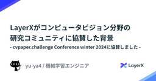
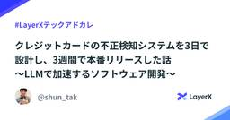
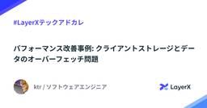
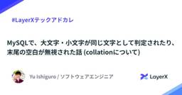
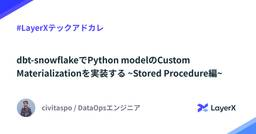
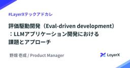

LayerX エンジニアブログ
https://tech.layerx.co.jp/
LayerX の エンジニアブログです。
フィード
Google SheetsからSnowflakeのデータを取得するアドオンの開発について 6
6
LayerX エンジニアブログ
こんにちは！バクラク事業部 機械学習・データ部 データチームの@TrsNiumです。 私たちのデータ分析環境では、Google Sheetsを手軽な分析ツールとして活用しています。Google Sheetsでは、マーケットプレースのアドオンを利用して外部データを取得できます。ただし、マーケットプレースにはSnowflakeからデータを取得するアドオンが存在しないため、独自にアドオンを開発しました。本記事では、Google App Scripts（以降GASと略称）を使用したアドオンの開発方法と、Snowflakeからデータを取得する具体的な実装について解説します。 開発したアドオンの紹介 アド…
1日前

LayerXがコンピュータビジョン分野の研究コミュニティに協賛した背景 - cvpaper.challenge Conference winter 2024に協賛しました - 2
LayerX エンジニアブログ
LayerXは2024年12月14日（土）に開催された cvpaper.challenge Conference winter 2024 (CCCW2024)に協賛し、会場提供を行いました。cvpaper.challenge Conference とは、コンピュータビジョン分野の研究コミュニティである cvpaper.challenge が主催するイベントです。以下はCCCW2024のイベントページからの引用です。 CCC（=cvpaper.challenge Conference）は，Computer Vision の分野動向調査，国際発展に関して議論を行うcvpaper.challenge…
2日前

クレジットカードの不正検知システムを3日で設計し、3週間で本番リリースした話 - LLMで加速するソフトウェア開発 220
LayerX エンジニアブログ
はじめに 背景：クレジットカード不正検知システムとは 3日でDesign Doc 2本、ADR 5本を執筆 3週間で開発し、本番環境にリリース LLM活用による効率化のポイント 目的・要件の整理 要件を満たす技術的オプションの洗い出し・技術調査 PoC実装 ドキュメントの執筆・技術選定 本実装 学び おわりに はじめに 新規プロダクトやプロジェクトの立ち上げにおいて、どれだけ意思決定を明確化し、設計を固めることができるかは、後々の開発効率や品質に大きな影響を与えます。一方で、最初が肝心だからといって調査や設計に何か月も費やす余裕は、多くの企業にはありません。できる限り早く設計を確立し、実装を開…
2日前

パフォーマンス改善事例: クライアントストレージとデータのオーバーフェッチ問題 #LayerXテックアドカレ 1
LayerX エンジニアブログ
この記事は、LayerX Tech Advent Calendar 2024 の 17 日目の記事です。 tech.layerx.co.jp こんにちは、バクラク事業部エンジニアの ktr です。特定のお客さま環境で発生した珍しいエラーと、その調査・解決までの一連の流れをご紹介します。本記事を通じて、同様の問題やパフォーマンス異常に遭遇した際のヒントや知見になれば幸いです。 特定テナントからのお問い合わせ あるお客さまから、「月末月初になると、画面の操作ができなくなる」とのご報告をいただきました。ピーク期間となる月末月初以外では特に問題なく利用できている点が特徴的で、当初はサーバー側の負荷増大…
3日前

MySQLで、大文字・小文字が同じ文字として判定されたり、末尾の空白が無視された話 (collationについて) 2
LayerX エンジニアブログ
この記事は、LayerX Tech Advent Calendar 2024 の16日目の記事です。 tech.layerx.co.jp はじめに こんにちは。 バクラク事業部エンジニアの石黒です。 今回は、MySQLを利用した開発をしていて、大文字・小文字が同じ文字として判定されたり、末尾空白が無視されて困った話を共有します。 ある日、いいかんじに開発していると、MySQLで不思議なことが起こりました。 以下のような users テーブルがあったとき、 id (PK) name (Unique Key) created_at updated_at 2C420DA8-62E9-43A6-8F5…
4日前

dbt-snowflakeでPython modelのCustom Materializationを実装する ~Stored Procedure編~ 1
LayerX エンジニアブログ
dbt-snowflakeを使用してPython ModelのCustom Materializationを実装する方法を解説します。SnowflakeのStored Procedureに焦点を当て、データ変換や複雑な処理をPythonで行う手法を紹介します。
7日前

評価駆動開発（Eval-driven development）：LLMアプリケーション開発における課題とアプローチ 24
LayerX エンジニアブログ
この記事は、LayerX Tech Advent Calendar 2024 の 12日目の記事です。 tech.layerx.co.jp こんにちは、LayerXのAI・LLM事業部プロダクトマネージャーの野畑(@isseinohata)です。 AI・LLM事業部では生成AIプラットフォーム「Ai Workforce」を開発しています。 getaiworkforce.com LLMを用いたアプリケーション開発には独自の特徴や課題が存在しており、Ai Workforceの開発チームも、日々様々なチャレンジに向き合っています。今回は、その中でも特にLLMの「出力の不確定さ」に起因する開発プロセス…
8日前

プロダクトチームのEMが実践している3つのマネジメント（戦略・達成・組織） #LayerXテックアドカレ
LayerX エンジニアブログ
この記事は、LayerX Tech Advent Calendar 2024 の10日目の記事です。 tech.layerx.co.jp こんにちは、すべての経済活動をデジタル化したい @makoga です。 去年エンジニアリングマネージャ(以下、EM)をテーマにした記事は、チームのCapabilityを題材とした「開発チームのマネージャーとして意識しているチームのCapability」や、EMののびしろを紹介した「バクラク事業部のEMは難しくて面白い！魅力と伸びしろのご紹介 #LayerXテックアドカレ #のびしろウィーク」がありました。 どちらも素晴らしい内容なのでぜひお読みください。 ま…
10日前
暇だし過去15年間のサイバーセキュリティな大統領令を見る（2017~2024） #LayerXテックアドカレ
LayerX エンジニアブログ
LayerX Tech Advent Calendar 2024 の8日目の記事です。 LayerX Fintech事業部（三井物産デジタル・アセットマネジメント（MDM）に出向）で、セキュリティ、インフラ、情シス、ヘルプデスク、ガバナンス・コンプライアンスエンジニアリングなどを担当している @ken5scal です。 前回は第１次および第２次オバマ政権が発したサイバーセキュリティ系の大統領令をみていきました。 tech.layerx.co.jp 今回は、第１次トランプ政権および、現時点でのバイデン政権の大統領令を紹介します。 第１次トランプ政権 （2017〜2020） EO13800: St…
10日前
バクラク上のテナント情報を SmartHR から API で同期するようにした話、または組織情報マスタを一旦諦めてデータ連携フレームワークを作った件について #LayerXテックアドカレ
LayerX エンジニアブログ
バクラク上のテナント情報をSmartHRからAPIで自動同期する方法を解説。組織情報マスタを作らないアプローチを採用し、データ連携フレームワークSynthetixを設計・実装した事例を紹介します。
11日前
リクエストログミドルウェアに後続ロジックから情報を渡したいときの2つのアプローチ #LayerXテックアドカレ
LayerX エンジニアブログ
この記事は、LayerX Tech Advent Calendar 2024 の8日目の記事です。 tech.layerx.co.jp バクラクビジネスカード開発チーム Tech Lead の budougumi0617 です。 今回はGoでWebアプリケーションを作る際に利用するHTTPミドルウェアでリクエストログを出力する際のTipsです。 HTTPハンドラー内のビジネスロジックで取得・導出した情報をリクエストに付与する方法を解説します。 TL;DR Go言語でWebアプリケーションを開発する際、よくある手法としてミドルウェアでユーザーIDやテナントIDといった情報を持ったリクエストログ（…
12日前
MySQL の UPDATE で IN 句の要素が多すぎてデッドロックした話 #LayerXテックアドカレ
LayerX エンジニアブログ
この記事は、LayerX Tech Advent Calendar 2024 の7日目の記事です。 tech.layerx.co.jp こんにちは。バクラクビジネスカード開発チーム エンジニアの iwamatsu です。 何か書くことないかな〜と頭を悩ませていたところ、見たことのない不思議なデッドロックに出くわしたので、今回はそれについて書こうと思います。 実行環境 バージョン: MySQL 8.0.39 ストレージエンジン: InnoDB トランザクション分離レベル: REPEATABLE READ 発生した事象 以下のようなユーザーテーブルがあるとします。 CREATE TABLE `us…
13日前
【2024年最新】スクラムを効率化するNotion活用術：ストーリーポイント管理とダッシュボード設計
LayerX エンジニアブログ
この記事は、LayerX Tech Advent Calendar 2024 の ６ 日目の記事です。 tech.layerx.co.jp ▼ 今回お話しすること こんにちは！バクラク事業部 ソフトウェアエンジニアの @minako-ph です 🐱 弊社では全社的に Notion を活用し、申請・経費精算チームではスクラム開発を採用しています。2週間ごとのスプリントを回す中で、Notionを使った進捗管理や作業効率向上に取り組んでいます。 1年前に執筆した Notionでスプリントのあれこれをダッシュボードで可視化する という記事では、Notionを活用したスクラム管理の仕組みを紹介しました。…
14日前
Vertex AI PIpelinesでの実験を加速させるためのTIPS #LayerXテックアドカレ
LayerX エンジニアブログ
この記事は、LayerX Tech Advent Calendar 2024 の 5 日目の記事です。 tech.layerx.co.jp こんにちは。バクラク事業部のAI-OCRグループでTech Leadをしている島越 (@nt_4o54)です。 今回は、Vertex AI Pipelinesを用いてチームで実験を行う際のTIPS的なものを紹介しようと思います。 なお、Vertex AI Pipelines自体の詳細な説明については割愛します。 過去にもVertex AI Pipelinesについての記事をいくつか公開してるので、(ちょっと情報が古いですが)興味があればそちらもご覧ください…
15日前
バクラクにおける可観測性向上の取り組み #LayerXテックアドカレ
LayerX エンジニアブログ
バクラク事業部 Platform Engineering 部 DevOps チームの uehara です。 LayerX Tech Advent Calendar 2024 の4日目となる本記事では、バクラクにおける可観測性向上の取り組みについて紹介します。 はじめに 2024年10月30日に行われたイベントで同じタイトルの発表をさせていただきました。 layerx.connpass.com speakerdeck.com 当日の発表では時間の関係で盛り込めなかった部分も含めて紹介します。 バクラクが抱えていた可観測性の課題 LayerX は コンパウンドスタートアップ として新しい事業やプロ…
16日前
暇だし過去15年間のサイバーセキュリティな大統領令を見る（~2017）
LayerX エンジニアブログ
LayerX Tech Advent Calendar 2024 の4日目の記事です。 LayerX Fintech事業部（三井物産デジタル・アセットマネジメント（MDM）に出向）で、セキュリティ、インフラ、情シス、ヘルプデスク、ガバナンス・コンプライアンスエンジニアリングなどを担当している @ken5scal です。 来年度1月より米国 大統領の新政権が始まりますね。 大統領の持つ特権の一つに、大統領令があります。 これは、法的な拘束力を持ち、議会の承認を得ずに実施することができる *1 権限です。 対象は様々な分野に及び、昨今?はサイバーセキュリティ（Cybersecurity）にも及びま…
16日前
LayerX バクラク事業部における探索的テストへの取り組み #LayerXテックアドカレ
LayerX エンジニアブログ
この記事は、LayerX Tech Advent Calendar 2024 の 3 日目の記事です。 tech.layerx.co.jp こんにちは。 LayerX バクラク事業部 QAチームマネージャーの nao（@TestingGolem）です。 この記事では、私が所属するバクラク事業部での探索的テストの取り組みについてご紹介させていただきます。 イントロダクション ソフトウェア開発において、リリース前のバグ発見や品質向上のための仕様の改善に向けたテスト戦略の策定は昨今のプロダクト開発に不可欠です。LayerXでは、「探索的テスト（Exploratory Testing）」を活用し、チー…
17日前
Pull Request を止めないために #LayerXテックアドカレ
LayerX エンジニアブログ
この記事は、LayerX Tech Advent Calendar 2024 の 2 日目の記事です。 tech.layerx.co.jp こんにちは。 LayerX バクラク事業部 バクラクビジネスカード開発チームEMの高江（@shnjtk）です。 前回の私の記事では、私が所属するチームで策定したコードレビューガイドラインについてご紹介しました。 tech.layerx.co.jp 今回の記事では、チームとして Pull Request（以下PR）のレビューを円滑に行うために、どのような仕組みを導入しているかをご紹介します。 PR を止めてはいけない これはバクラクの開発を始めた当初から大事…
18日前
バクラク事業部の「エンジニア共有会」とは？持続可能な運営と文化醸成の工夫 #LayerXテックアドカレ
LayerX エンジニアブログ
この記事は、LayerX Tech Advent Calendar 2024 の 1 日目の記事です。 tech.layerx.co.jp エンジニア共有会とは 共有会の変遷と目的の進化 初期の取り組み 目的の明確化とビジョンの設定 Goals / Non-Goals の定義 ミーティングオーナーの引き継ぎと運営の体制 ミーティングオーナーの変遷 持続可能な運営のための工夫 共有会のコンテンツと特徴的なコーナー 対応必須アナウンス そぼぎコーナー 今週の ADR・Design Docs エンジニア共有会を通じて得た気づき 最後に Engineering Office で主に技術広報を担当してい…
19日前
LayerX Tech Advent Calendar 2024 はじまります！ #LayerXテックアドカレ
LayerX エンジニアブログ
こんにちは。すべての経済活動を、デジタル化したい @serima です。 今年は、技術広報としてエンジニア向けのカンファレンスへのブース出展および各種イベントの企画・運営などを行ってきました。 さてさて、2024年も残すところあとわずか。 今年もLayerXでは、LayerX Tech Advent Calendar 2024を開催します！ 今回は、バクラク事業部をはじめ、Fintech事業部、AI・LLM事業部、コーポレートエンジニアリング室、HRなど、LayerXのさまざまな事業部・チームから、多彩なメンバーが参加予定です。 社内でアドベントカレンダーへの投稿者を募ったところ、なんと25件…
21日前
JSConf JP 2024 に参加しました！ #jsconfjp
LayerX エンジニアブログ
こんにちは。バクラク事業部エンジニアの omori (@onsd_) です。 先日開催された JSConf JP 2024 に参加しました。 本記事では、LayerXとJSConf の関わりの共有と、セッションの一部について振り返りを行っておりますので、ぜひご覧ください。 JSConf JP とは JSConf JP 2024 は、日本最大級の JavaScript カンファレンスであり、一般社団法人 Japan Node.js Association が主催する JavaScript フェスティバルです。 今年で日本開催 5 回目を迎え、日本の Web 開発者と海外の Web 開発者をつなぐ…
25日前
新卒目線で見たAI・LLM事業部とAi Workforceのプロダクト開発
LayerX エンジニアブログ
9月に入社したエンジニアの藤田と申します。AI・LLM事業部で新卒として働くとどのような業務ができるのか・その魅力をお話しいたします。 AI・LLM事業部が開発するプロダクト「Ai Workforce」 AI・LLM事業部では、主にエンタープライズのお客さま向けに、幅広い業務の効率化を対象としたAIプラットフォーム「Ai Workforce」を開発しています。 実現できること・機能の詳細については、以下をご参考ください。 getaiworkforce.com 「AIで特定の業務を自動化できるかどうか」の二極化ではなく人間とAIが協力し合いながら業務を進められる設計が素晴らしい点の一つだと感じて…
1ヶ月前
LayerX AI・LLM事業部とプロダクトの魅力と伸びしろ：最近ジョインしたPdMの視点から
LayerX エンジニアブログ
みなさん、こんにちは。AI・LLM事業部のプロダクトマネージャー（PdM）として10月にジョインした稲生です。 簡単な経歴として、直近はtoCのECサービスのPdM、それ以前はエンジニアとしてアプリやウェブサービスを中心に開発を行ってきました。 今回は、最近ジョインした立場からAI・LLM事業部やプロダクトの魅力についてお伝えしたいと思います。 1. プロダクト（Ai Workforce）について AI・LLM事業部が提供するAi Workforceは、企業向けのAI活用プラットフォームです。 サービスの概要は以下の紹介サイトからもご確認いただけますが、「企業と成長を共にするAIプラットフォー…
1ヶ月前
JSConf JP 2024にPremium Sponsorとして協賛します & 2名登壇します！ #jsconfjp
LayerX エンジニアブログ
LayerX は JSConf JP 2024 に Premium Sponsor として協賛します。また、LayerX のソフトウェアエンジニアの2名が登壇も予定しています。 あわせて現地でのブース出展もおこない、主にバクラク事業部のソフトウェアエンジニアたちが参加者の皆さまとお話できるのを楽しみにしています。 LayerX として初めての JSConf JP への協賛となり、JavaScript コミュニティへの感謝と貢献を形にできる機会として非常に楽しみにしています。 登壇内容 LayerX からはバクラク事業部 バクラク申請・経費精算チームの @minako__ph とバクラク請求書受…
1ヶ月前
7夜連続で、技術イベントのアーカイブ動画を公開します
LayerX エンジニアブログ
こんにちは！すべての経済活動を、デジタル化したい Engineering Office の @serima です。 LayerX では、今年の 5 月にオフィスを東銀座に移転して以来、エンジニアリングをテーマにした数多くのイベントを LayerX イベントスペースで実施してきました。 layerx.co.jp この度、それらのイベントアーカイブ動画を LayerX 公式 YouTube チャンネルにて 7夜連続公開 することにしました。 以下、公開スケジュールや詳細をお伝えします。 動画公開スケジュール 以下の日程にて、毎日 19時 に公開を予定しています。お気に入りのコンテンツを見逃さないよ…
1ヶ月前
FlutterKaigi 2024にシルバースポンサーとして協賛します & 1名登壇します！
LayerX エンジニアブログ
LayerX は、FlutterKaigi 2024にシルバースポンサーとして協賛します。 また、LayerX のソフトウェアエンジニアが1名登壇を予定しています。 FlutterKaigi 2024とは FlutterKaigiは、日本国内で開催されるFlutter技術に特化したカンファレンスです。2021年に初開催され、今年は初の2日間連続での開催となっています。 詳細は公式サイトをご覧ください。 2024.flutterkaigi.jp 協賛の背景 LayerXが提供するバクラクのモバイルアプリはFlutterを利用して開発を行っており、私たちは技術コミュニティから日々たくさんの知見を頂…
1ヶ月前
「間接的な精度評価」によるチューニングの効率化
LayerX エンジニアブログ
はじめに こんにちは！LayerX AI・LLM事業部でマネージャーを務めていますエンジニアの恩田（ さいぺ ）です。 AI・LLM事業部では「Ai Workforce」というプロダクトを開発しています。 エンタープライズ企業のドキュメントワークを効率化する生成AIプラットフォームと銘を打っており、そのユースケースは多岐にわたるのですが、その一つに論文からの項目抽出があります。 （出典）Jin, Bowen, et al. "Long-Context LLMs Meet RAG: Overcoming Challenges for Long Inputs in RAG." arXiv prep…
1ヶ月前
Ai Workforceのインフラ構成
LayerX エンジニアブログ
こんにちは、LayerX AI・LLM事業部テックリードの須藤です。 今回は、AI・LLM事業部が提供する「Ai Workforce」のインフラ構成について紹介します。 先日、Ai Workforceの紹介サイトがついに公開されました！ getaiworkforce.com また、プロダクト開発チームも以下の記事で紹介されていますのでこちらも合わせてご覧ください。 tech.layerx.co.jp Microsoft Azureを選定した理由 Ai Workforceのクラウド基盤にはMicrosoft Azureを採用しています。その主な理由は以下の2点です。 Azure OpenAIとの…
1ヶ月前
Ai Workforceの開発を支えるチームとプロセスの現在地
LayerX エンジニアブログ
AI・LLM事業部プロダクト開発グループマネージャーの篠塚(@shinofumijp)です。 本日、私たちが開発している生成AIプロダクト「Ai Workforce」の紹介サイトを公開しました。 getaiworkforce.com プロダクトページの公開に合わせて本記事ではAi Workforceを開発するチームについて紹介します。 企業と共に成長するAIプラットフォーム「Ai Workforce」 Ai Workforceは企業がAIを使いこなすためのプラットフォームです。 Ai Workforceでできること 幅広いお客様の業務を効率化するAIワークフロー、AIワークフローが整理した情報…
1ヶ月前
バクラク事業部のテストピラミッド設計
LayerX エンジニアブログ
こんにちは、バクラク事業部QAチームのteyamaguです。今回は、私たちが自動テストの整備を進める上で指針として設計した「バクラク事業部のテストピラミッド」について紹介します。このピラミッドは、効果的な自動テストを構築するために、自動テストのガイドラインとして機能しています。 バクラク事業部におけるテストピラミッドの概要 バクラク事業部では、1年前からフロントエンド・バックエンドの統合的な自動テストの整備を進めています。自動テストにおける大きな課題の1つが「どのテストで何を確認すべきか？」です。そこでバクラク事業部では、事業部全体で納得できる形のテストピラミッドを設計し、これを自動テストの指…
1ヶ月前